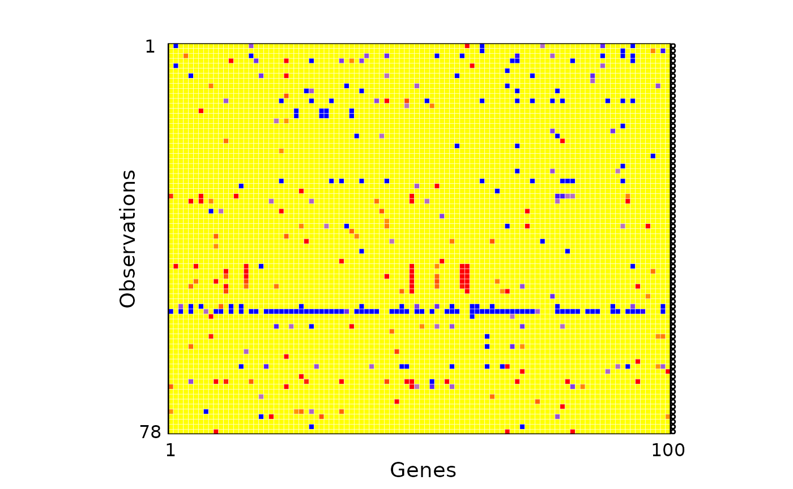

Breast Cancer
breastcancer.Rmd
#remotes::install_github("PengSU517/robcovsel")
#remotes::install_github("PengSU517/shootings") !!!!!!!!!!!!!!
#This shootings package is not my original work. The functions in this package were forked from https://github.com/ineswilms/sparse-shooting-S. I constructed a package of those functions to make them more convenient to use.
library(robcovsel)
library(tidyverse)
library(robustHD) #sparse LTS
library(shootings) # sparse shooting S
library(cellWise)
library(corrplot)
# rm(list = ls()) # clean slate
# setwd(dirname(rstudioapi::getSourceEditorContext()$path))Data description
To illustrate a real data application for a high dimensional settings, we use the Breast Cancer dataset (van’t Veer. et.al 2002) as an example. There are 24,481 genes of 117 breast tumor patients in this dataset. For the 78 breast cancer patients with disease-free survival time, {for each of the genes the} \(\log_{10}(Intensity)\) is given. We construct a regression model to select some important genes whose \(\log_{10}(Intensity)\) are significantly related to the disease-free patient survival. For the sake of this, we regard the disease-free survival time as the response and use the \(\log_{10}(Intensity)\)’s as predictors.
It is assumed that only a few genes are associated with disease-free survival time. For very high dimensional datasets, usually we screen some variables first and then run variable selection based on the predictors we screened. Thus we first compute the robust marginal correlations (using the pairwise estimator (Gnanadesikan and Kettenring, 1972) with the \(Q_n\) scale estimator (Rousseeuw and Croux, 1993) of gene expressions with disease-free survival time and then select the 100 genes that have the largest robust pairwise correlation coefficients as predictors.
y = breastcancer_screened$dat.surtime
x = breastcancer_screened[,1:100+2]
#corrs = covf(as.matrix(x), scale.method = "qn", cor.method = "pair", pda.method = F)$cormatrix
#rownames(corrs) = colnames(corrs) = NULL
#corrplot(corrs, method = "shade",shade.col = NA, tl.col ="black", tl.pos = "n", order = "FPC")Outlier detection
Outlier detection results of those predictors based on DDC citep{rousseeuw_detecting_2018} is shown in Figure ref{breastcancer}. Most cells are yellow, showing they are not detected as outliers. Cells are flagged as outlying (red and blue cells) if the observed value and predicted value differ too much. A red cell means the observed value is larger than the predicted value and a blue cell means the observed value is smaller than the predicted value significantly.
fit1 <- DDC(x)
#>
#> The input data has 78 rows and 100 columns.
cellMap(fit1$remX, fit1$stdResid, columnlabels = c(1,rep(" ",98),100), rowlabels = c(1,rep(" ",76),78), columnangle = 0,
rowtitle = "Observations", columntitle = "Genes", sizetitles = 2,adjustrowlabels = 0.5, adjustcolumnlabels = 0.5)+
theme(axis.text.x = element_text(size = 12),
axis.text.y = element_text(size = 12),
axis.title.x = element_text(size = 14),
axis.title.y = element_text(size = 14),
legend.title = element_text(size=14), #change legend title font size
legend.text = element_text(size=12))
#ggsave("breastcancer.eps",width = 8,height = 6)
length(fit1$indcells)/7800
#> [1] 0.04987179Variable selection
Given the high cellwise contamination, traditional variable selection methods such as Lasso, or rowwise robust variable selection methods may lead to misleading selection results. With this consideration, cellwise robust methods may have better solutions. A sparse regression model is fitted via Lasso, sLTS, sShootingS, ALRP and ALGR, seperately. All selected genes are sorted based on the their robust pairwise correlations with the survival time.
x = as.matrix(x[,sort(names(x))])
lassofit = covlasso(x,y,cor.method = "pearson", scale.method = "sd", adaptive = F)
alassofit = covlasso(x,y,cor.method = "pearson", scale.method = "sd", adaptive = T)
sLTSfit = sparseLTS(x,y)
sssfit = sparseshooting(as.matrix(x),y)
lrpfit = covlasso(x,y,cor.method = "pair", scale.method = "qn",adaptive = F)
alrpfit = covlasso(x,y,cor.method = "pair", scale.method = "qn",adaptive = T)
lgrfit = covlasso(x,y,cor.method = "gaussrank", scale.method = "qn", adaptive = F)
algrfit = covlasso(x,y,cor.method = "gaussrank", scale.method = "qn", adaptive = T)
x = as.data.frame(x)
rst = t(plyr::rbind.fill(list(
alrp = data.frame(t(sort(names(x)[as.logical(alrpfit$betahat_opt)]))),
lrp = data.frame(t(sort(names(x)[as.logical( lrpfit$betahat_opt)]))),
algr = data.frame(t(sort(names(x)[as.logical(algrfit$betahat_opt)]))),
lgr = data.frame(t(sort(names(x)[as.logical( lgrfit$betahat_opt)]))),
alasso = data.frame(t(sort(names(x)[as.logical(alassofit$betahat_opt)]))),
lasso = data.frame(t(sort(names(x)[as.logical( lassofit$betahat_opt)]))),
slts = data.frame(t(sort(names(x)[as.logical(sLTSfit$coefficients[-1])]))),
sss = data.frame(t(sort(names(x)[as.logical(sssfit$coef[-1])])))
)))
colnames(rst) = c("ALRP", "LRP", "ALGR", "LGR", "ALasso","Lasso", "sLTS", "sShootingS")
rst_tbl = as.data.frame(t(matrix(rst, nrow = 6)))
rst_tbl
#> V1 V2 V3 V4 V5
#> 1 AL162078 Contig37028_RC Contig40406_RC Contig62306 Contig64630_RC
#> 2 NM_001616 NM_001830 NM_002824 NM_003125 NM_003860
#> 3 NM_013437 <NA> <NA> <NA> <NA>
#> 4 <NA> <NA> <NA> <NA> <NA>
#> 5 <NA> <NA> <NA> <NA> <NA>
#> 6 <NA> <NA> <NA> <NA> <NA>
#> 7 <NA> <NA> <NA> <NA> <NA>
#> 8 <NA> <NA> <NA> <NA> <NA>
#> 9 <NA> <NA> <NA> <NA> <NA>
#> 10 <NA> <NA> <NA> <NA> <NA>
#> 11 <NA> <NA> <NA> <NA> <NA>
#> 12 <NA> <NA> <NA> <NA> <NA>
#> 13 AL162078 Contig35537_RC Contig37028_RC Contig38966_RC Contig40406_RC
#> 14 Contig48328_RC Contig57357_RC Contig62306 Contig64630_RC M94046
#> 15 NM_001616 NM_001830 NM_002442 NM_002824 NM_003125
#> 16 NM_004052 NM_004618 NM_005785 NM_013437 NM_014706
#> 17 <NA> <NA> <NA> <NA> <NA>
#> 18 <NA> <NA> <NA> <NA> <NA>
#> 19 <NA> <NA> <NA> <NA> <NA>
#> 20 <NA> <NA> <NA> <NA> <NA>
#> 21 <NA> <NA> <NA> <NA> <NA>
#> 22 <NA> <NA> <NA> <NA> <NA>
#> 23 <NA> <NA> <NA> <NA> <NA>
#> 24 <NA> <NA> <NA> <NA> AL162078
#> 25 Contig48328_RC Contig54956_RC Contig55181_RC M94046 NM_001616
#> 26 <NA> <NA> <NA> <NA> <NA>
#> 27 <NA> <NA> <NA> <NA> <NA>
#> 28 <NA> <NA> <NA> <NA> <NA>
#> 29 <NA> <NA> <NA> <NA> <NA>
#> 30 <NA> <NA> <NA> <NA> <NA>
#> 31 <NA> <NA> <NA> <NA> <NA>
#> 32 <NA> <NA> <NA> <NA> <NA>
#> 33 <NA> <NA> <NA> <NA> <NA>
#> 34 <NA> <NA> <NA> <NA> <NA>
#> 35 <NA> <NA> <NA> <NA> <NA>
#> 36 <NA> <NA> <NA> AL162078 Contig19451_RC
#> 37 Contig48328_RC Contig54893_RC Contig54956_RC Contig55181_RC Contig57357_RC
#> 38 NM_001616 NM_005785 NM_005881 NM_006301 <NA>
#> 39 <NA> <NA> <NA> <NA> <NA>
#> 40 <NA> <NA> <NA> <NA> <NA>
#> 41 <NA> <NA> <NA> <NA> <NA>
#> 42 <NA> <NA> <NA> <NA> <NA>
#> 43 <NA> <NA> <NA> <NA> <NA>
#> 44 <NA> <NA> <NA> <NA> <NA>
#> 45 <NA> <NA> <NA> <NA> <NA>
#> 46 <NA> <NA> <NA> <NA> <NA>
#> 47 <NA> <NA> <NA> <NA> <NA>
#> 48 <NA> <NA> AB029009 AL162078 Contig36859_RC
#> 49 M94046 NM_006301 <NA> <NA> <NA>
#> 50 <NA> <NA> <NA> <NA> <NA>
#> 51 <NA> <NA> <NA> <NA> <NA>
#> 52 <NA> <NA> <NA> <NA> <NA>
#> 53 <NA> <NA> <NA> <NA> <NA>
#> 54 <NA> <NA> <NA> <NA> <NA>
#> 55 <NA> <NA> <NA> <NA> <NA>
#> 56 <NA> <NA> <NA> <NA> <NA>
#> 57 <NA> <NA> <NA> <NA> <NA>
#> 58 <NA> <NA> <NA> <NA> <NA>
#> 59 <NA> <NA> <NA> <NA> <NA>
#> 60 <NA> AL162078 Contig37063_RC Contig42740_RC Contig48328_RC
#> 61 Contig55181_RC Contig57357_RC M94046 NM_001673 NM_005881
#> 62 NM_016390 <NA> <NA> <NA> <NA>
#> 63 <NA> <NA> <NA> <NA> <NA>
#> 64 <NA> <NA> <NA> <NA> <NA>
#> 65 <NA> <NA> <NA> <NA> <NA>
#> 66 <NA> <NA> <NA> <NA> <NA>
#> 67 <NA> <NA> <NA> <NA> <NA>
#> 68 <NA> <NA> <NA> <NA> <NA>
#> 69 <NA> <NA> <NA> <NA> <NA>
#> 70 <NA> <NA> <NA> <NA> <NA>
#> 71 <NA> <NA> <NA> <NA> <NA>
#> 72 Contig31424_RC Contig37063_RC Contig38966_RC Contig40406_RC Contig42006_RC
#> 73 Contig48328_RC Contig50846_RC Contig54893_RC Contig56229 Contig57357_RC
#> 74 M94046 NM_001616 NM_001673 NM_003862 NM_004052
#> 75 NM_006752 NM_014706 NM_016390 <NA> <NA>
#> 76 <NA> <NA> <NA> <NA> <NA>
#> 77 <NA> <NA> <NA> <NA> <NA>
#> 78 <NA> <NA> <NA> <NA> <NA>
#> 79 <NA> <NA> <NA> <NA> <NA>
#> 80 <NA> <NA> <NA> <NA> <NA>
#> 81 <NA> <NA> <NA> <NA> <NA>
#> 82 <NA> <NA> <NA> <NA> <NA>
#> 83 <NA> <NA> <NA> <NA> <NA>
#> 84 AB029009 AB040942 AB040971 AF070605 AF155652
#> 85 AK001044 AL137362 AL137527 AL162078 Contig1408
#> 86 Contig19451_RC Contig28947_RC Contig29141_RC Contig30146_RC Contig31312_RC
#> 87 Contig35537_RC Contig36859_RC Contig37028_RC Contig37063_RC Contig41521_RC
#> 88 Contig43169_RC Contig48328_RC Contig48472_RC Contig50846_RC Contig52620_RC
#> 89 Contig54956_RC Contig55181_RC Contig56229 Contig57521_RC Contig62306
#> 90 M94046 NM_000915 NM_001616 NM_001643 NM_001673
#> 91 NM_001826 NM_001830 NM_001861 NM_001905 NM_002442
#> 92 NM_003125 NM_003245 NM_003860 NM_003992 NM_004618
#> 93 NM_005785 NM_005881 NM_006301 NM_006305 NM_006752
#> 94 NM_013437 NM_014347 NM_014519 NM_014675 NM_014908
#> 95 NM_016083 NM_016390 NM_016434 NM_020974 AL162078
#> V6
#> 1 NM_000907
#> 2 NM_004618
#> 3 <NA>
#> 4 <NA>
#> 5 <NA>
#> 6 <NA>
#> 7 <NA>
#> 8 <NA>
#> 9 <NA>
#> 10 <NA>
#> 11 <NA>
#> 12 AJ236885
#> 13 Contig45347_RC
#> 14 NM_000907
#> 15 NM_003860
#> 16 NM_016083
#> 17 <NA>
#> 18 <NA>
#> 19 <NA>
#> 20 <NA>
#> 21 <NA>
#> 22 <NA>
#> 23 <NA>
#> 24 Contig22786_RC
#> 25 NM_006301
#> 26 <NA>
#> 27 <NA>
#> 28 <NA>
#> 29 <NA>
#> 30 <NA>
#> 31 <NA>
#> 32 <NA>
#> 33 <NA>
#> 34 <NA>
#> 35 <NA>
#> 36 Contig45347_RC
#> 37 M94046
#> 38 <NA>
#> 39 <NA>
#> 40 <NA>
#> 41 <NA>
#> 42 <NA>
#> 43 <NA>
#> 44 <NA>
#> 45 <NA>
#> 46 <NA>
#> 47 <NA>
#> 48 Contig48328_RC
#> 49 <NA>
#> 50 <NA>
#> 51 <NA>
#> 52 <NA>
#> 53 <NA>
#> 54 <NA>
#> 55 <NA>
#> 56 <NA>
#> 57 <NA>
#> 58 <NA>
#> 59 <NA>
#> 60 Contig54956_RC
#> 61 NM_006301
#> 62 <NA>
#> 63 <NA>
#> 64 <NA>
#> 65 <NA>
#> 66 <NA>
#> 67 <NA>
#> 68 <NA>
#> 69 <NA>
#> 70 <NA>
#> 71 <NA>
#> 72 Contig45347_RC
#> 73 Contig64630_RC
#> 74 NM_006301
#> 75 <NA>
#> 76 <NA>
#> 77 <NA>
#> 78 <NA>
#> 79 <NA>
#> 80 <NA>
#> 81 <NA>
#> 82 <NA>
#> 83 AB002369
#> 84 AJ236885
#> 85 Contig14797_RC
#> 86 Contig31424_RC
#> 87 Contig42740_RC
#> 88 Contig54893_RC
#> 89 Contig8862_RC
#> 90 NM_001719
#> 91 NM_002824
#> 92 NM_004911
#> 93 NM_012261
#> 94 NM_015270
#> 95 Contig37028_RC
# write_csv(rst_tbl,"breastcancer_result.csv")References
[1] Bai, Y., Tian, M., Tang, M.-L., and Lee, W.-Y. (2021). Variable selection for ultra-high di- mensional quantile regression with missing data and measurement error. Statistical Methods in Medical Research, 30(1):129–150.
[2] Bottmer, L., Croux, C., and Wilms, I. (2021). Sparse regression for large data sets with outliers. European Journal of Operational Research, In Press.
[3] Boudt, K., Cornelissen, J., and Croux, C. (2012). The Gaussian rank correlation estimator: robustness properties. Statistics and Computing, 22(2):471–483.
[4] Gnanadesikan, R. and Kettenring, J. R. (1972). Robust estimates, residuals, and outlier detection with multiresponse data. Biometrics, 28:81–124.
[5] Huang, C., Farewell, D., and Pan, J. (2017). A calibration method for non-positive definite covariance matrix in multivariate data analysis. Journal of Multivariate Analysis, 157:45–52.
[6] Ollerer, V., Alfons, A., and Croux, C. (2016). The shooting S-estimator for robust regres- sion. Computational Statistics, 31(3):829–844.
[7] Ollerer, V., and Croux, C. (2015). Robust high-dimensional precision matrix estimation. In Modern nonparametric, robust and multivariate methods, (pp. 325-350). Springer, Cham.
[8] van ’t Veer, L. J., Dai, H., van de Vijver, M. J., He, Y. D., Hart, A. A. M., Mao, M., Peterse, H. L., van der Kooy, K., Marton, M. J., Witteveen, A. T., Schreiber, G. J., Kerkhoven, R. M., Roberts, C., Linsley, P. S., Bernards, R., and Friend, S. H. (2002). Gene expression profiling predicts clinical outcome of breast cancer. Nature, 415(6871):530–536.